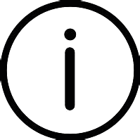

You need to enable JavaScript to run this app.

Take Action - Citizen Scientist
Contribute to GLOBE Data collection
ScienceDirect: Collected Papers on Nitrates
Aarhus University study on Nitrates in Drinking Water